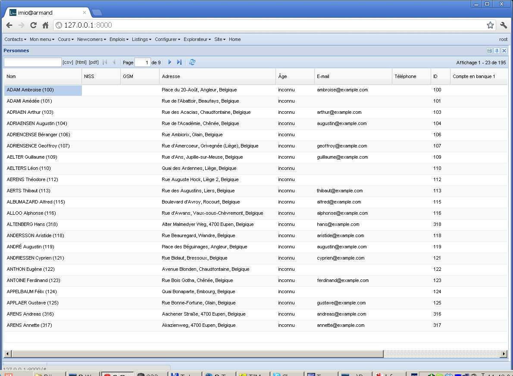
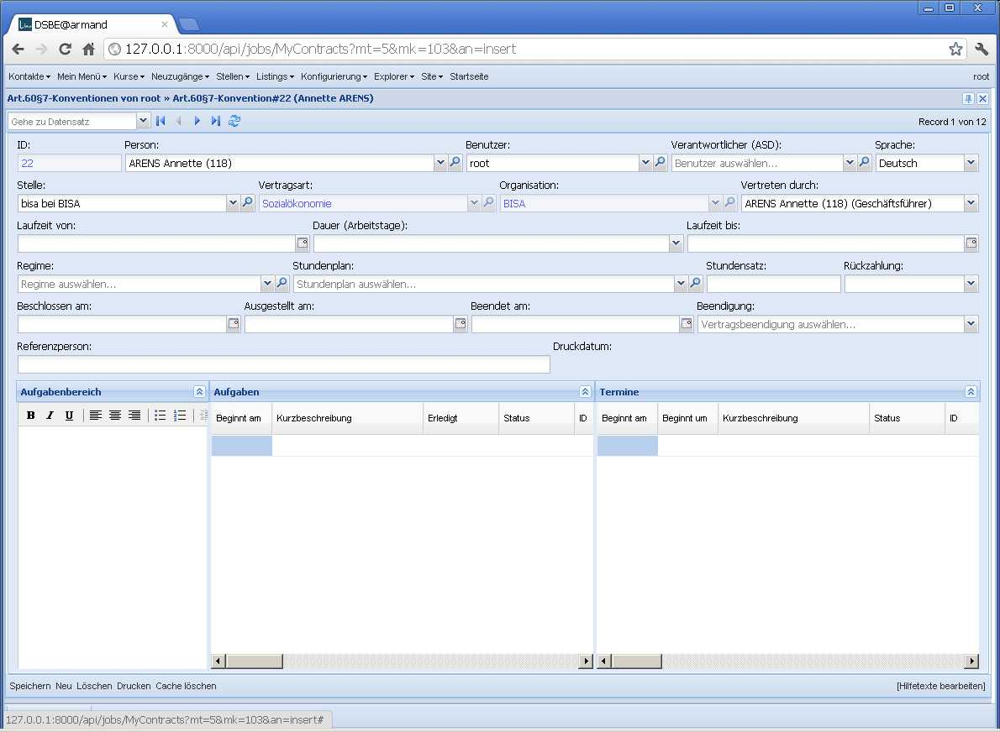
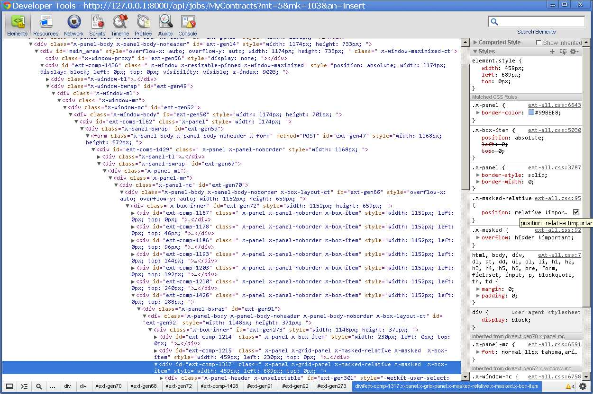
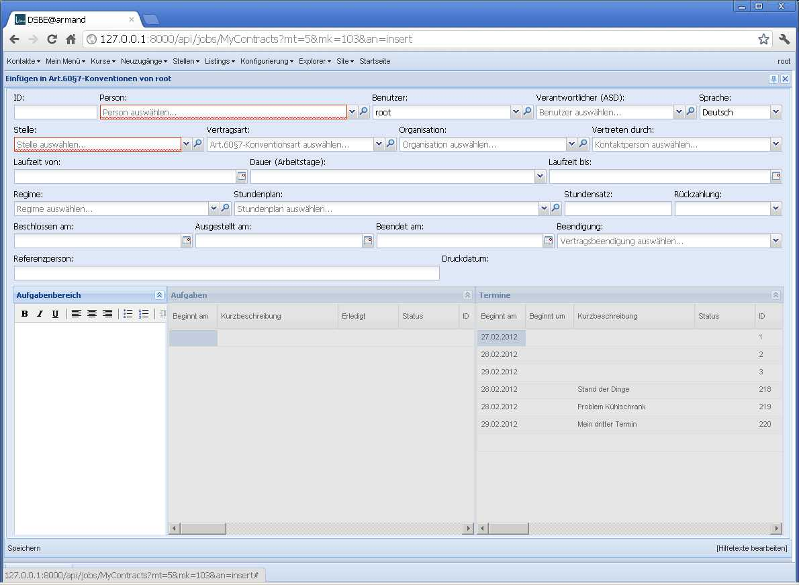
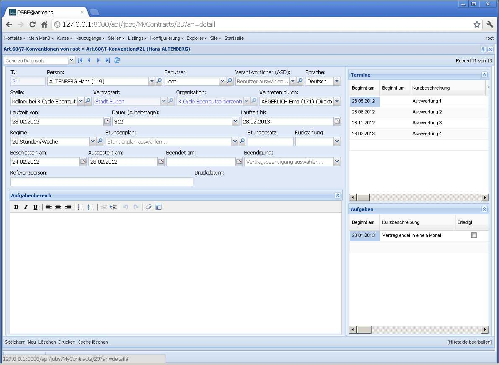

20120228¶
Site de démonstration IMIO¶
Début des travaux pour un site de démonstration en collaboration avec l’IMIO. Pour avoir des données de démonstration un peu réalistes, j’ai pris une liste des noms de familles belges, une liste des prénoms classiques en France et une liste des rues de Liège, j’en fais un mix aléatoire pour obtenir 200 personnes fictives habitant dans la région de Liège...
{kind=link}
(Il y a de quoi fignoler: générer également des NISS, des n° de GSM,...)
Voici aussi le code source de cette fixture dans le repository de Lino: /lino/modlib/contacts/fixtures/demo_fr.py.
No more x-masked-relative¶
The following effect happens in Lino/PCSW 1.4.2 in the insert window of a
Job Contract (and only there):
{kind=link}
After clicking Speichern, Lino switches to the detail window where the effect does not happen, although both windows use the same class Lino.jobs.Contracts.FormPanel:
{kind=link}
The difference is that the two grids in the lower hbox are disabled in the “insert” version of our FormPanel.
Let’s go back to the insert window and inspect those misplaced grids. Aha. The effect comes because the two disabled grids have a css class x-masked-relative which sets their position to “relative”:
{kind=link}
Manually disabling the rule visibly solves the problem:
{kind=link}
The class x-masked-relative is defined in core.css
and does nothing else than overriding that
position property to “relative”:
.x-masked-relative {
position: relative !important;
}
Why do disabled panels have a class x-masked-relative? Can I tell ExtJS to not use it? It is applied to elements during the mask() method, when their position was “static”:
mask : function(msg, msgCls) {
...
if (!(/^body/i.test(dom.tagName) && me.getStyle('position') == 'static')) {
me.addClass(XMASKEDRELATIVE); // 20120228
}
...
mask = dh.append(dom, {cls : "ext-el-mask"}, true);
...
return mask;
},
When I remove the
me.addClass(XMASKEDRELATIVE) instruction
in above Ext.Element.mask(), everything seems to work fine.
The future will tell us whether this hack causes side-effects.
Since I don’t want to tell every Lino user to patch their ExtJS sources,
I overwrite that method in linolib.js.
But what was the purpose of that operation? Why does the css class x-masked-relative exist? I have no idea...
Independently of that problem, I modified the general layout of that FormPanel after this :
{kind=link}
Und noch ein Bug¶
Hackerzacker, kaum habe ich nach fast zweistündigem Wursteln obigen Bug gelöst,
finde ich noch einen. Diesmal im Kalender-Panel und in meinem eigenen Code.
Für die Benutzer sah es so aus, dass das Popup-Fenster zum Einfügen eines
Termins sich nicht schloss, wenn man bestätigte.
Lag daran, dass
lino.modlib.cal.models.ExtAllDayField.set_value_in_object()
selber ein save() aufrief.
Preparing to release 1.4.3¶
lino.apps.pcsw.migrate.migrate_from_1_4_2()
Zwischendurch auch noch ein ganz einfacher Bug:
- Wenn man einen Kolonnenfilter setzte, kam auf dem Server ein Traceback “global name ‘json’ is not defined”
Und dann wollte ich eigentlich endlich die strenge Version des
OverlappingContractsTest
aktivieren, aber dann fand er doch noch eine ganze Serie von
Beanstandungen bei Datenimport.
Wieso denn das?
Die Datenkontrollliste war doch leer?
Tilt! Die Datenkontrollliste zeigte nur deshalb keine Fehlermeldungen an,
weil die Antwort des Servers mehr als 30 Sekunden brauchte.
Das ist der Defaultwert für Ext.Ajax.timeout
(ein Parameter, den ich gerade erst entdeckt habe).
Statt den Timeout jetzt einfach zu erhöhen, sollte ich wohl besser mal
überlegen, wie Lino solche längeren Prozesse verwalten sollte.
Es gibt ja den Ext.ProgressBar.
Jedenfalls bleibt der
OverlappingContractsTest
zunächst mal noch in der
Datenkontrollliste.
Et voilà: released /releases/1.4.3.